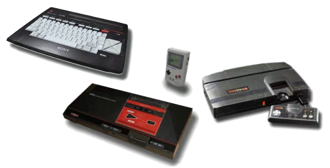

Copyright (C) 2018-2023 by Juergen Wothke (The source code can be found here.)
This enhanced JavaScript/WebAssenbly/HTML5 port of NEZplug++ is a "swiss army knife" type of "legacy computer music" player that emulates a wide range of game consoles and home computers (Famicom, Game Gear, Game Boy, TurboGrafx-16 aka PC-Engine, MSX, ZX Spectrum.) Special purpose emulators may provide better results in some cases, e.g. webTurbo for "Hudson Entertainment Sound" (.hes) or spectreZX for ZXSpectrum (.ay, etc).
Bring your own music files (.ay, .gbr, .gbs, .hes, .kss, .mbm, .mus, .nfs, .sgc, .sng) by dropping them onto the page. In order to drag&drop songs that require additional library files (e.g. drumkits for .mus and .mbm songs) select all the files that belong to the song and drop these on the page in one go. Note that formats like sgc are poorly suited for drag and dropping since actually used track IDs cannot automatically be guessed correctly by the player. Respective music files can be found on modland.com. and in other online legacy software collections.
This is one of about 30 music players that I have ported to the Web over the years. To hear them all in action visit my PlayMOD page.
Credits: The original NEZplug was created by Mr. Mamiya with the NEZplug++ extensions by RuRuRu. The music files used as examples are fetched directly from ftp.modland.com (If you are a copyright holder of a respective song and do not want it to be used here let me know so that I can replace it.)
